Transfer familiar reasoning to lactic acid, an amino acid and an unknown spectrum. No metabolic pathway knowledge is needed; read the local atoms and bonds.
Retrieve the starting idea
List the checks you can make on any proposed elementary step.
Read an unfamiliar-looking molecule locally
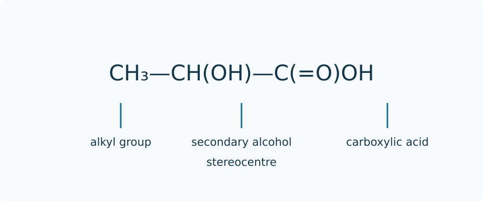
Lactic acid combines several familiar chemical features
Which functional groups can you recognise without knowing a metabolic pathway?
Apply: read an unfamiliar-looking molecule locally
Why is the alcohol secondary?
Rank the carbon branches
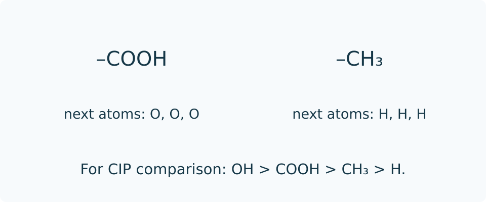
Rank the two carbon branches at lactic acid stereocentre
Why does COOH outrank CH₃ in CIP comparison?
Resolve: rank the carbon branches
Rank the two carbon branches at lactic acid stereocentre
After the first carbon tie, compare attached atoms: O,O,O outranks H,H,H using multiple-bond bookkeeping.
Apply: rank the carbon branches
Give the complete priority order at lactic acid’s centre.
Orient the lowest priority away
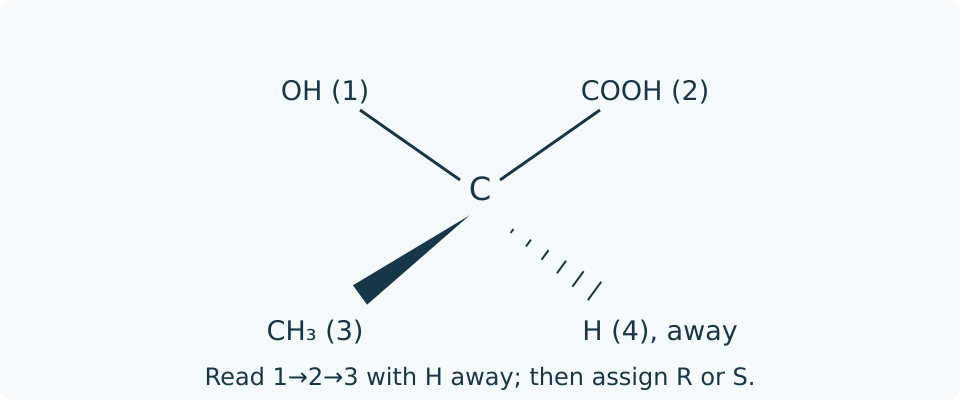
A low-priority H directed away makes the viewing rule usable
With H dashed away, which path gives R or S?
Resolve: orient the lowest priority away
A low-priority H directed away makes the viewing rule usable
Read 1→2→3: clockwise is R, anticlockwise is S. In this supplied view it is clockwise, so R.
Apply: orient the lowest priority away
If H instead points toward you, how is the apparent result corrected?
Compare configurations without changing connectivity
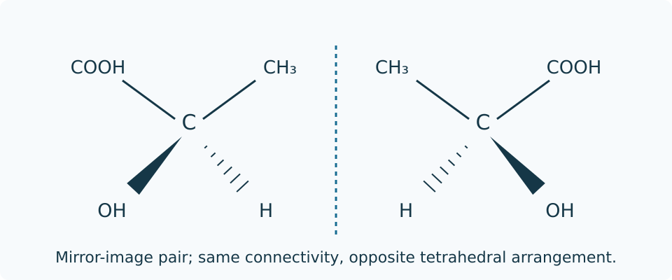
Keep connectivity fixed when identifying stereoisomers
Can the mirror-related pair be superimposed by rigid rotation?
Apply: compare configurations without changing connectivity
Does changing the drawing orientation alone create the other enantiomer?
Predict the simplest acid–base change
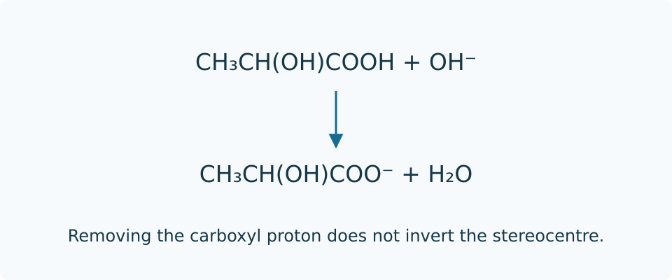
Acid–base change preserves the carbon skeleton
Which H is removed in the stated hydroxide deprotonation?
Resolve: predict the simplest acid–base change
Acid–base change preserves the carbon skeleton
The carboxyl proton moves to hydroxide, giving lactate and water. The alcohol-bearing centre is not inverted by that step.
Apply: predict the simplest acid–base change
Write the product formula and net charge.
Audit atoms and net charge
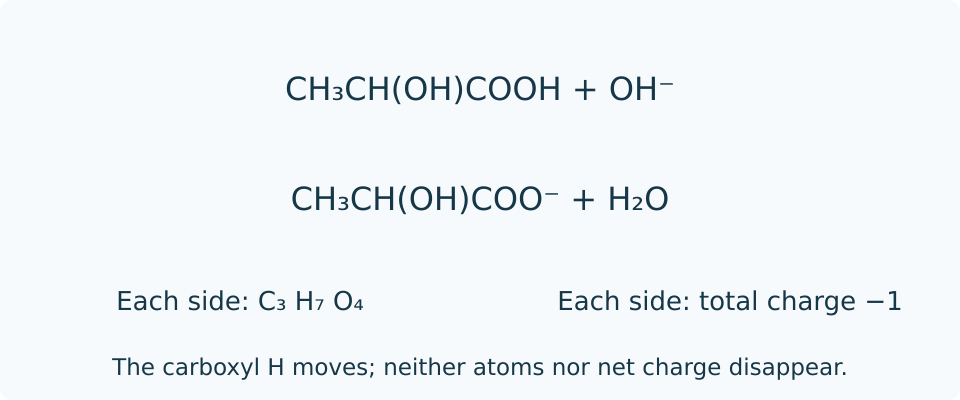
Audit a proton-transfer reaction atom by atom
What inventory should agree before and after the proton transfer?
Resolve: audit atoms and net charge
Audit a proton-transfer reaction atom by atom
Both sides have C₃H₇O₄ and total charge −1. The H changes location; it is not deleted.
Apply: audit atoms and net charge
Where does the original acid O–H bonding pair go?
Transfer the aqueous ionisation model
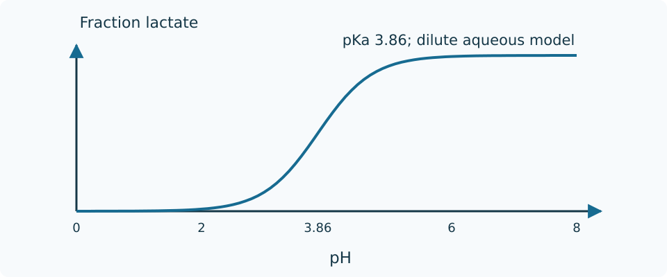
A supplied lactic-acid model predicts its ionised fraction
At pH equal to supplied pKa 3.86, what fraction is lactate?
Resolve: transfer the aqueous ionisation model
A supplied lactic-acid model predicts its ionised fraction
For a dilute monoprotic model, 1/(1+10^(pKa−pH)) = 0.5 at equal pH and pKa.
Apply: transfer the aqueous ionisation model
At pH 4.86, calculate the approximate fraction.
Predict a functional-group transformation
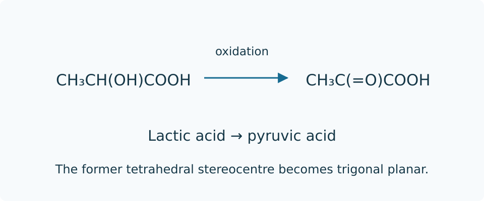
Oxidation changes the alcohol carbon into a carbonyl carbon
What product results from oxidising the secondary alcohol to a ketone?
Resolve: predict a functional-group transformation
Oxidation changes the alcohol carbon into a carbonyl carbon
CH₃C(=O)COOH, pyruvic acid. The former alcohol carbon is now trigonal planar.
Apply: predict a functional-group transformation
Does the ketone carbon retain the original R/S stereocentre?
Check oxidation without counting oxygen atoms only
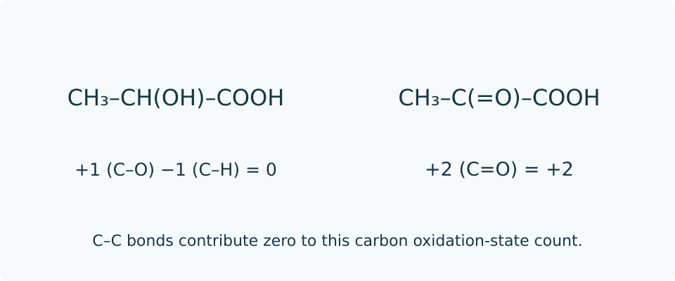
The alcohol carbon oxidation state changes from zero to plus two
How does the changing carbon’s oxidation state change?
Resolve: check oxidation without counting oxygen atoms only
The alcohol carbon oxidation state changes from zero to plus two
Lactic centre: +1 for C–O and −1 for C–H gives 0. Ketone carbon: C=O gives +2.
Apply: check oxidation without counting oxygen atoms only
Why does each C–C bond contribute zero in this count?
Choose the target site before a mechanism
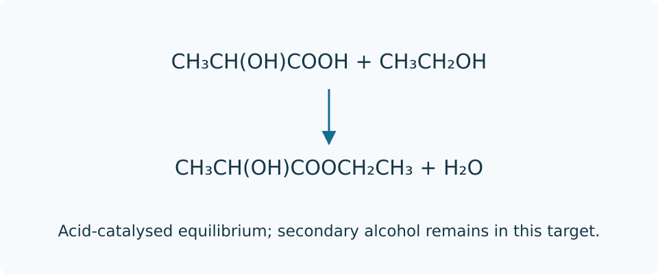
Esterification replaces the acidic OH as a net transformation
Which group changes in the selected ethyl-lactate target?
Apply: choose the target site before a mechanism
Does this target drawing guarantee no competing reactions under all conditions?
Track an atom through a mechanism
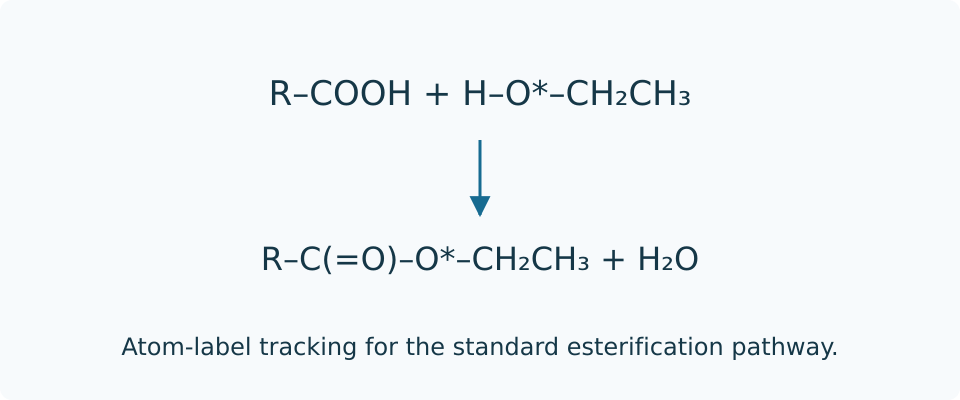
The alcohol oxygen becomes the ester single-bond oxygen
Where does the labelled alcohol oxygen appear in standard esterification?
Resolve: track an atom through a mechanism
The alcohol oxygen becomes the ester single-bond oxygen
It becomes the ester single-bond oxygen linking acyl carbon to ethyl. The mechanism, not a filename, tracks the atom.
Apply: track an atom through a mechanism
Does esterification at the acid site require breaking a bond at the original stereocentre?
Choose addition or acyl substitution
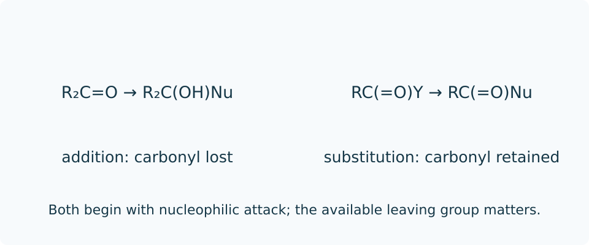
Choose a mechanism from the site and the structural change
Which substrate feature allows the carbonyl to reform by leaving-group loss?
Resolve: choose addition or acyl substitution
Choose a mechanism from the site and the structural change
An acyl derivative has a potentially viable leaving group. An ordinary aldehyde/ketone lacks that group at the corresponding position.
Apply: choose addition or acyl substitution
Name the first shared elementary event in both pathways.
Read a biological-looking charge pattern
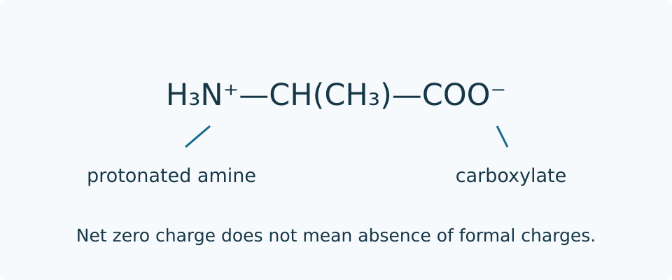
The same molecule can carry acid and basic sites
Which formal charges are present in the supplied alanine form?
Apply: read a biological-looking charge pattern
Can net-neutral alanine still strongly interact with water?
Compute net charge explicitly
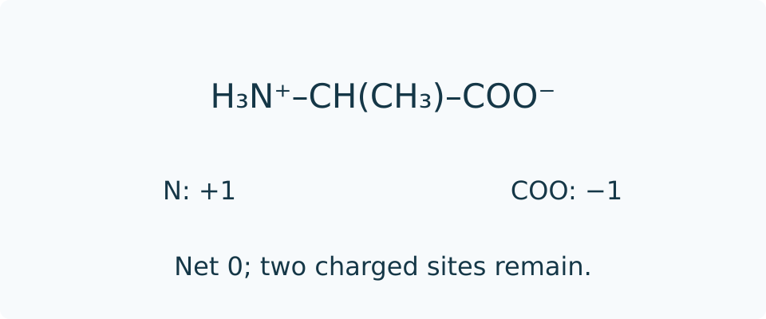
Alanine net charge is the sum of its formal charges
What is the sum of the two formal charges?
Apply: compute net charge explicitly
Does the amide N of a peptide automatically behave like this free ammonium site?
Change protonation without changing skeleton
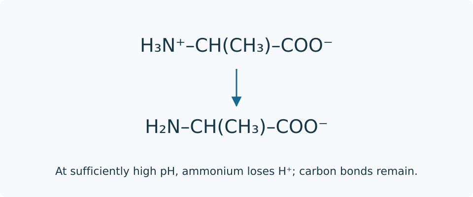
A pH change can alter charge without changing connectivity
At sufficiently high pH, which drawn site loses H⁺?
Apply: change protonation without changing skeleton
Does this protonation-state change alone break a C–C bond?
Combine independent observations
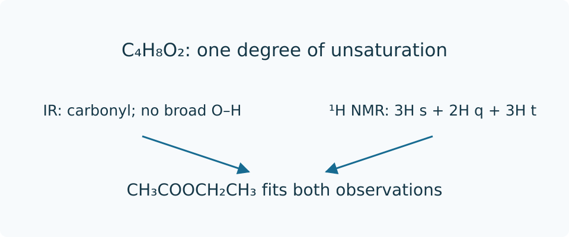
Require agreement between different measurements
Which candidate fits the supplied carbonyl and ethyl/acetyl proton pattern?
Apply: combine independent observations
What is the role of the molecular formula in that argument?
Ask an alternative to make a prediction
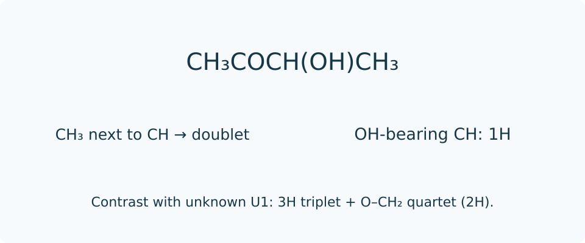
A second candidate predicts a different methyl splitting
What simple coupling feature challenges the hydroxyketone alternative?
Resolve: ask an alternative to make a prediction
A second candidate predicts a different methyl splitting
Its CH₃ beside CH predicts a doublet in the simple model, and its OH-bearing CH represents 1H rather than an O–CH₂ 2H quartet.
Apply: ask an alternative to make a prediction
Would a single matching carbonyl band rescue all those disagreements?
Resolve conflicting experimental claims
High isolated yield cannot rescue contradictory identity evidence
What can 1.70 g against 1.8016 g theoretical establish by itself?
Resolve: resolve conflicting experimental claims
High isolated yield cannot rescue contradictory identity evidence
An apparent mass-based yield of about 94.4%, assuming product mass. Contradictory NMR tests that identity/purity assumption.
Apply: resolve conflicting experimental claims
Give two possible contributors to an unexpectedly high mass.
Write the causal link
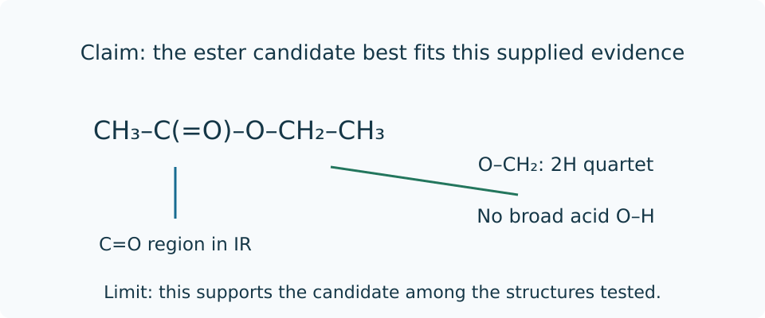
A scientific explanation links claim, observation and chemical reason
How does the ester claim connect to actual measured kinds of observations?
Apply: write the causal link
What statement would be circular rather than evidential?
Bring quantitative and structural evidence together
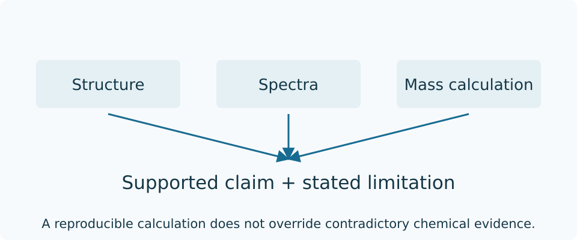
Build a defensible conclusion from separate evidence streams
Which evidence streams must agree before a strong synthesis claim?
Apply: bring quantitative and structural evidence together
Name one useful follow-up when purity is uncertain.
Integrate one short case
An isolate has high apparent yield and one TLC spot but unexpected major NMR signals. Write a defensible claim and one targeted next check.
Compare the worked reasoning
The apparent yield is calculated under a product-mass assumption that the NMR calls into question. Compare full assigned NMR or use a suitable second separation to test a specific impurity alternative.
Exit explanation
What should an unfamiliar molecule prompt you to do first?